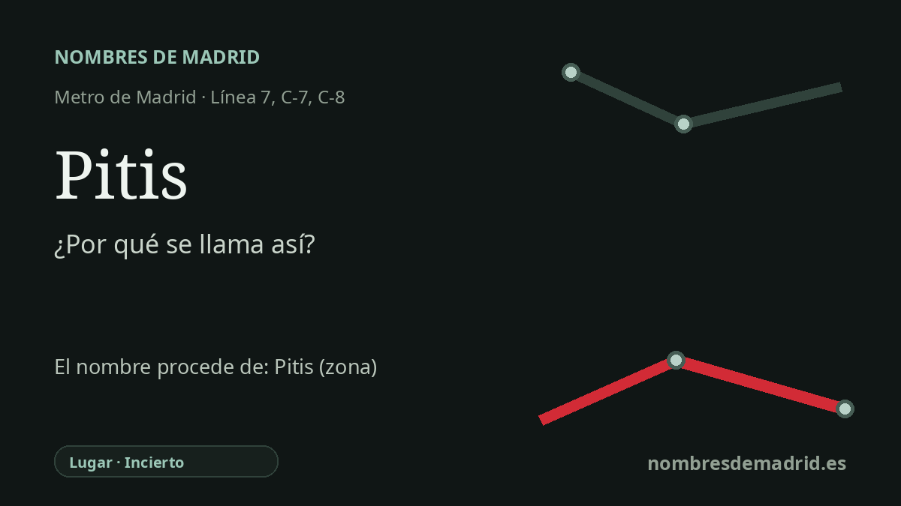

Publicado el · Investigación de Nombres de Madrid · Cómo verificamos cada origen · 8 fuentes consultadas
Respuesta rápida
Pitis toma su nombre de un antiguo topónimo rural del borde noroeste de Madrid, no de una persona conocida. La documentación oficial y municipal conserva Pitis como nombre de paraje, pero su origen lingüístico sigue sin resolverse.
La historia del nombre
Pitis es una estación con nombre de lugar. El Metro no creó la palabra: cuando la línea 7 llegó a este punto el 29 de marzo de 1999, la actuación se planteó expresamente como enlace con la estación de Cercanías de Pitis ya existente. Renfe y el Consorcio Regional de Transportes siguen describiéndola como el intercambiador entre la línea 7 de Metro y los servicios de Cercanías en el extremo noroeste de Madrid.
El nombre más antiguo pertenece al paisaje rural del antiguo término de Fuencarral, hoy dentro del distrito de Fuencarral-El Pardo. Los inventarios de suelo del Ayuntamiento de Madrid conservan varias descripciones de paraje próximas con fórmulas propias de documentación rústica: Pitis, Vereda de Córdoba o Huertas de Pitis, y Hoya del Rencajo o Pitis. Ese tipo de mención es relevante porque muestra Pitis como topónimo local, no simplemente como una etiqueta ferroviaria de finales del siglo XX.
Antes del PAU de Arroyo del Fresno y de las calles modernas de Gloria Fuertes y María Casares, este borde de Madrid era recordado como campo abierto. La memoria histórica local de Peñagrande y Lacoma describe el Pitis de los años sesenta como una alameda frondosa con un arroyuelo donde los vecinos iban a merendar, pasear o bañarse. Esa imagen encaja con la posición de la estación cerca del Arroyo del Fresno, de los accesos al Monte de El Pardo y de una zona que durante mucho tiempo quedó entre ciudad, ferrocarril y campo.
La cronología del transporte explica por qué el viejo topónimo se hizo tan visible. La estación ferroviaria existía antes de la ampliación del Metro; después, las obras de la línea 7 de la Comunidad de Madrid rehabilitaron el antiguo edificio ferroviario y crearon un intercambiador. El mismo nombre pasó así a ser cabecera de Metro, parada de Cercanías y referencia de autobuses, convirtiendo un topónimo rural menor en un nombre habitual de los planos de transporte madrileños.
El origen de la palabra Pitis, sin embargo, sigue siendo incierto. Un blog madrileño de toponimia lo incluyó entre los topónimos naturales, pero no ofreció una derivación, y no se ha localizado una explicación académica u oficial más sólida. La posible relación con el griego Pitys, 'pino', es demasiado especulativa para presentarla como origen: no hay un mecanismo demostrado por el que esa forma griega entrara en la toponimia rural castellana de esta zona. La formulación más segura es, por tanto, prudente: Pitis es un antiguo topónimo local documentado en el entorno de la estación, pero su fuente lingüística profunda sigue sin conocerse.